Amina's Well
"Before the well, I walked two hours each morning. Now my daughter goes to school every day."
Siaya County, KenyaBringing clean water to rural East Africa
Over 400 million people in sub-Saharan Africa lack access to safe drinking water. Mto Springs partners with local communities to build sustainable wells, train maintenance teams, and transform lives — one village at a time.
Every drop counts. From East Africa, to the world...

Clean water changes everything. When a village gains access to safe water, children stay in school instead of walking hours to collect it. Waterborne diseases drop. Women gain time to start businesses. Crops get irrigated. Communities thrive.
The Mto Springs Project doesn't just drill wells — we build lasting infrastructure by training local technicians, establishing community water committees, and using solar-powered pump systems designed to last decades.
Every project starts with the community. Local leaders identify needs, choose sites, and form water committees to manage long-term maintenance.
Our pump systems run on solar energy — no fuel costs, no emissions. Built with locally-sourced parts that technicians can repair on-site.
We train local mechanics and provide complete toolkits. When something breaks, the fix comes from within the community — not from overseas.
In communities where Mto Springs operates, school attendance among girls has increased by 38%. Cases of cholera and typhoid have dropped by over 60%. Women who once spent 4+ hours daily fetching water now use that time for farming, education, and entrepreneurship.
But the numbers only tell part of the story. Behind every well is a village that chose to invest in its own future.
Read their stories →Whether you donate, volunteer, or simply spread the word — you become part of the solution.
100% of donations go directly to water projects. Our operations are funded separately by founding partners.
Secure payment via Stripe. Tax-deductible in the US.